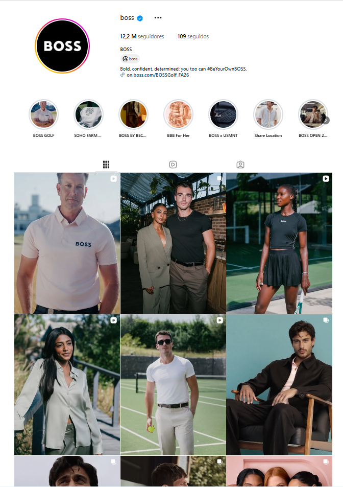
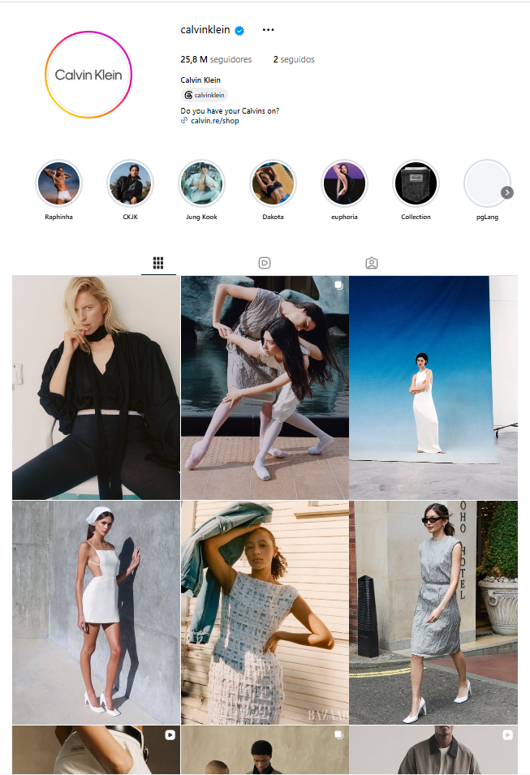
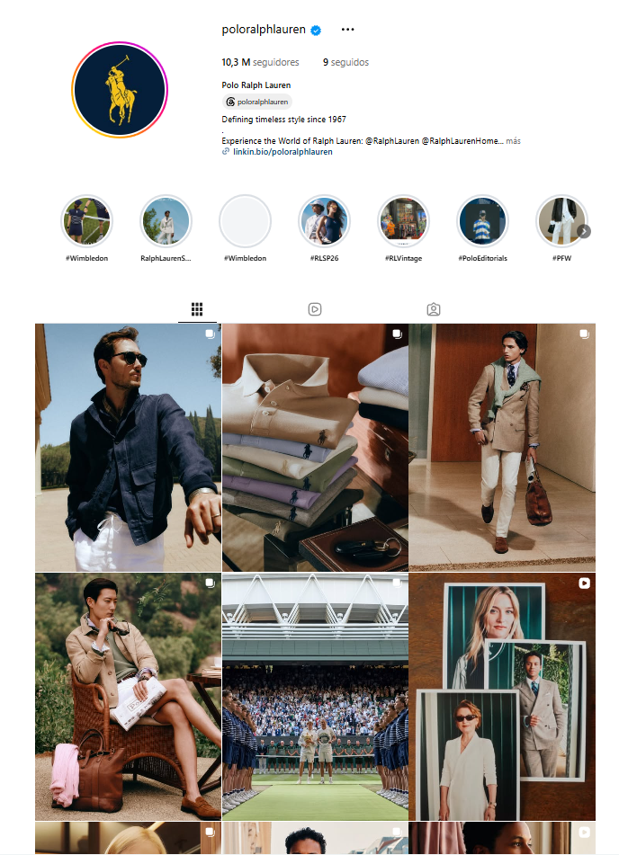
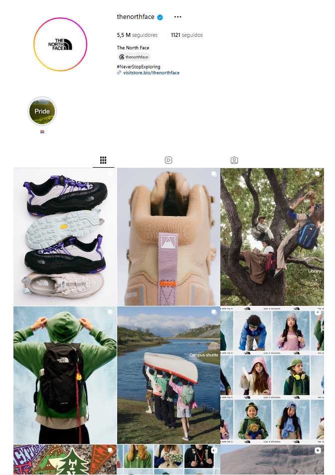

La revolución digital
+2000–actualidad
La comunicación de moda dejó de desarrollarse en un único medio para convertirse en un ecosistema visual multiplataforma, permanente e interactivo.
Puntos clave
- Las marcas comenzaron a desarrollar contenidos adaptados a múltiples canales y formatos.
- Las redes sociales establecieron una comunicación continua entre marcas y audiencias.
- La comunicación evolucionó desde campañas aisladas hacia ecosistemas visuales conectados.
- Aparición del fashion film como formato de comunicación.
- La dirección de arte amplió su alcance, pasando a la gestión integral de la identidad visual.
Referentes
- SHOWstudio: explora nuevas formas de comunicación digital al mostrar no solo el resultado final de una campaña, sino también los procesos creativos que la hacen posible.
- Redes sociales: Instagram, TikTok, Pinterest...
Vídeo
Galería




